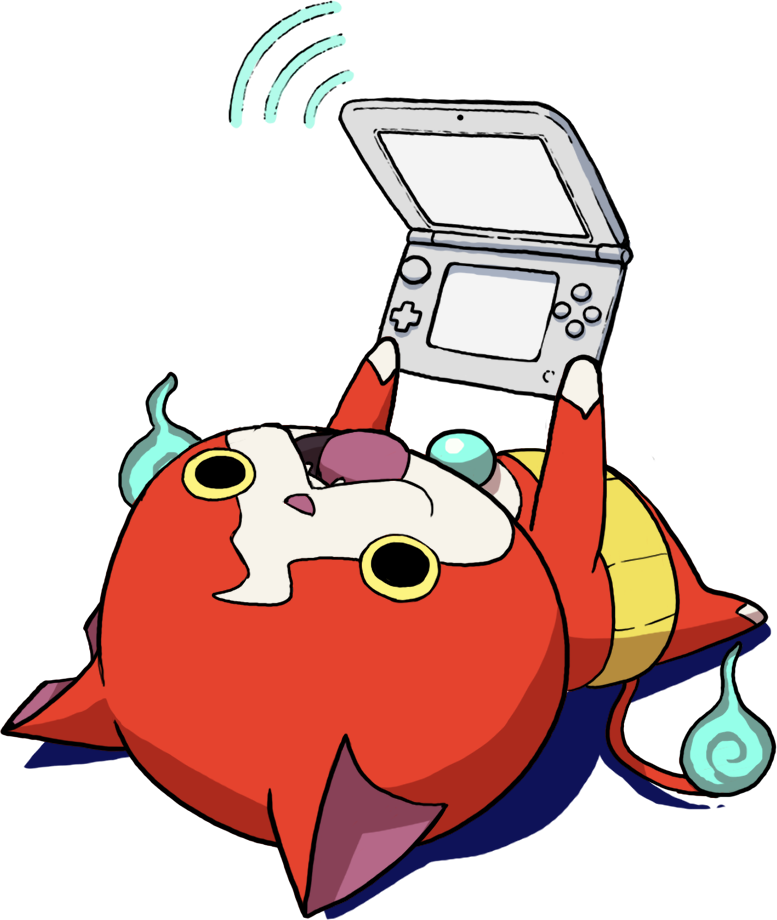
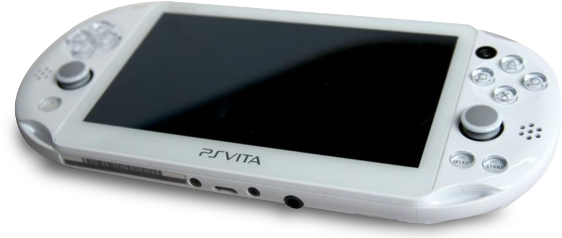
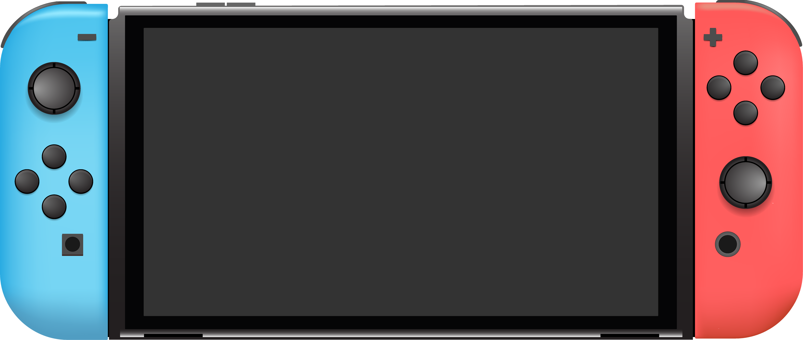

Handhelds I Like
A webpage that shares some of my favorite video game handhelds.
Playdate
Things I Like
- Great Color; A lot of consoles have neutral-tones, so a bright yellow console stands out and is cool.
- A Crank?!; A unique addition that enables the creation of many games that would not possible on other devices.
- Encouraged to Create; Developing your own games for the platform is encouraged via its free to use SDK.

New Nintendo ThreeDS
Things I Like
- My Childhood; What I grew up playing, I'm biased...
- Easy to update looks; Change faceplates give the console new aesthetics.
- Charm; From the details in the eShop to the Mii Plaza, there are a lot of little touches that exude charm.

PS Vita
Things I Like
- Beautiful Screen; The one I have has a really pretty OLED screen.
- Portable; I'm able to fit it in more spaces than I can with my switch.
- Good for long sessions; It has a nice weight that makes it easy to hold for long periods.

Nintendo Switch
Things I Like
- Playing Options; Can play in TV or handheld mode.
- Value; Can be a good entry point for people getting into handheld gaming since it is a popular console with a sequel model, so there is good chance of getting one for a decent price secondhand unlike something that is more rare or doesn't have a newer model to upgrade to.
- Lots of game variety; Since it's been out so long, nearly every game type is on there except for really high-spec stuff.
